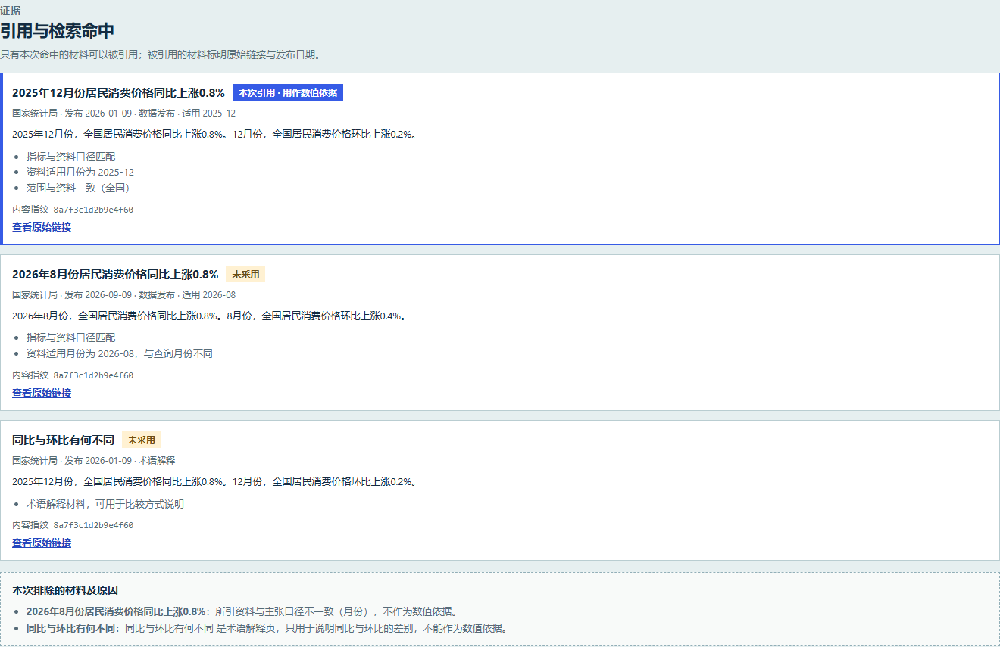
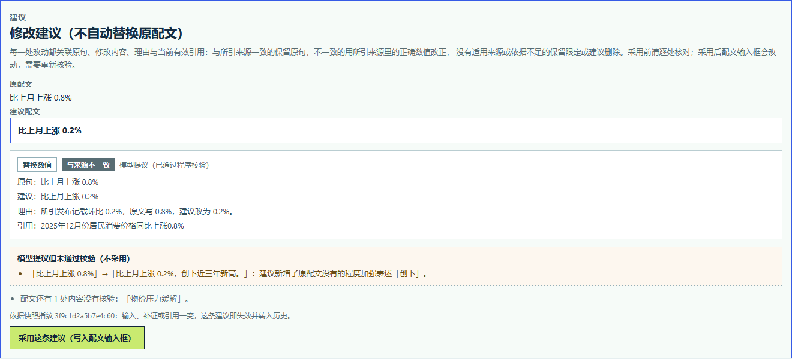
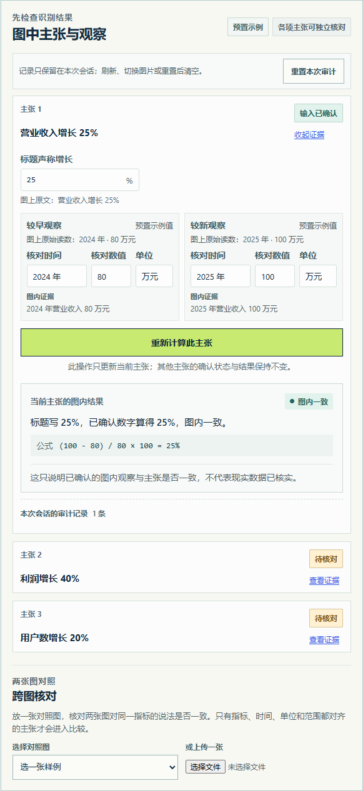
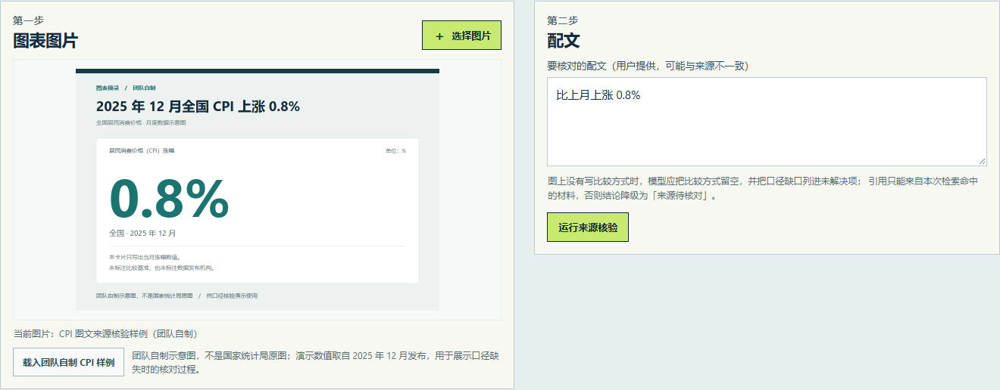
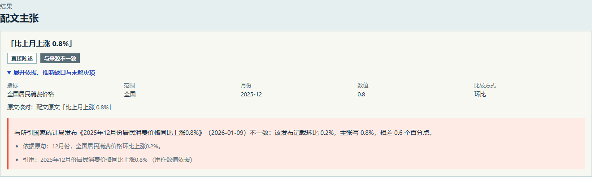
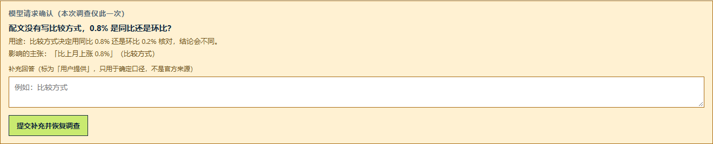
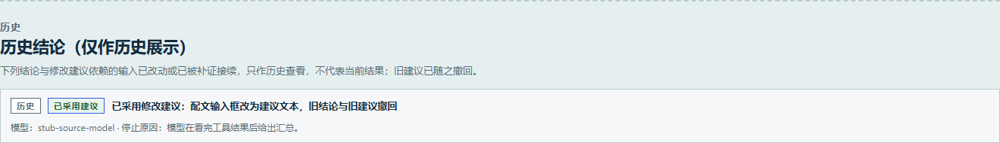
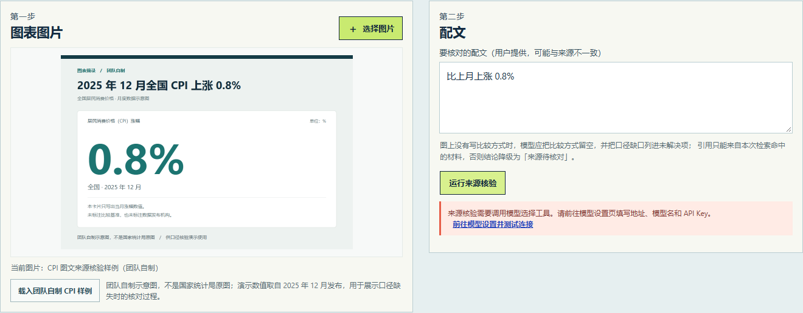
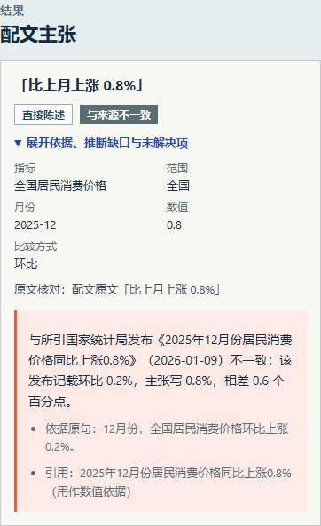

AI-WEB 网页开发挑战赛 · 省赛作品技术报告
让只有截图的读者，能复查一张图表说的到底是不是图上和公开来源里有的东西
页码为 PDF 实际页码。各章末尾的「证据出处」列出一句话结论能指到的命令或文件。
社交平台和资讯站点上大量图表以截图形式传播。读者往往只有一张图，配文写在标题或正文里，出处要么没有，要么是一句「据国家统计局」。 读者要判断的其实是很朴素的两件事：图里写的东西自己是否自洽（例如柱高对应的涨幅和标题里的百分比对不对得上），以及 配文说的和图上、和可查的公开来源是否一致。这两件事目前都靠人肉：自己算一遍百分比，再去搜索官方发布核对口径。
更麻烦的是第二件事很容易做错。同一张 CPI 图，同比和环比可以是两个完全不同的数字；「上涨 0.8%」在 2025 年 12 月和 2026 年 8 月两个发布里同时存在，只看数值相等就下结论会得到相反的答案。普通读者既没有资料库，也没有逐条记录推理过程的工具。
第一目标用户是只有截图的普通读者：他拿不到原始数据，也不打算做专业查证，只想知道这张图「能不能信、能信到什么程度、哪里需要打问号」。 这个定位决定了产品的三条底线：
应用在本机运行：npm run dev 同时启动页面与 API，浏览器打开 http://127.0.0.1:5173。四个页面：着陆页、审计工作台、来源核验、模型设置。
| 图内审计（阶段一—阶段三） | 上传或选用团队自制样例 → 模型读出图上原文与数值 → 用户逐条确认／更正 → 程序按公式计算增长率并判定「图内一致／图内矛盾／需要确认」；可放入第二张图做跨图口径比对，可对柱状图给出纵轴不从零的呈现风险提示。 |
|---|---|
| 来源核验（阶段四，本次主演示路径） | 上传图文 → 模型拆解主张（直接陈述／可检查推断／观点）→ 在固定国家统计局资料库里多轮调用受限工具检索与比较 → 程序校验引用与口径后给出逐条结论 → 缺关键口径时向用户提出一个具体问题 → 用户补充后沿同一条调查记录恢复 → 给出逐处有据的修改建议，由用户决定是否采用。 |
| 失败恢复（阶段五） | 区分未配置密钥、上游失败、超时、结构错误与格式不支持；失败时不展示任何旧结论或预置结果，给出可操作的下一步。 |
在这张图 + 这几条可核查的官方材料的范围内，应用能给出带引用的分部位结论，能明确说出「哪一部分现在推不出来、缺什么才能继续」， 并且把模型能做的（读图、语义匹配、措辞提议）和必须由程序做的（计算、口径适配、引用校验、改写把关）分开—— 这套分工有 20 题 ×2 臂 ×3 次的真实模型配对评测记录在案（详见第六章与第七章）。
下表把项目各阶段写定的用户故事收敛成能力项，并给出验收状态。本地＝有自动化测试；在线＝有真实模型运行记录；未验证＝只有计划或替身。
| 用户需求（引项目任务书） | 实现方式 | 验收方式 | 状态 |
|---|---|---|---|
| 读者想在保存错误的模型接口地址时立即看懂哪里填错 | 保存时拒绝完整端点路径（/responses、/chat/completions 等），提示填写根地址，且不改动原设置 | API 行为测试 + 三种视口浏览器走查 | 本地 |
| 读者想在模型不可用或输出无效时看到真实错误和下一步操作 | 未配置／连接失败／超时／结构不符／格式不支持分类提示；失败不展示任何结论 | API 替身测试 + e2e「上游失败或超时只显示失败原因」 | 本地在线（阶段四评测中出现过真实失败与降级） |
| 读者想在缺数字、缺证据或跨图口径不合时看到待确认 | 图内检查在数值、单位、时间顺序、文字依据不全时降级「需要确认」；跨图四要素（指标／时间／单位／范围）任一不齐只能「待核对」 | 共享规则单测 + 固定样例离线评测 23/23 | 本地 |
| 评审想看见图片输入、模型观察、人工确认、确定性计算和证据如何接续 | 每条观察标出来源（模型读取／预置示例／用户更正／暂不可读）；确认后由程序计算并给出公式 | e2e 三视口断言 + 独立 UI 评审 9/10 | 本地在线（阶段一三张自制 PNG 真实读取） |
| 读者想核对配文与公开来源是否一致，并知道依据 | 固定资料库 + 四个受限工具的多轮调查；引用逐条校验角色与口径，结论给到分部位状态 | 20 题 ×2 臂 ×3 次真实模型配对评测 | 在线 |
| 读者想在被指出问题后拿到可用的修改建议 | 逐处改动关联原句、建议、理由与当前有效引用；模型提议逐条过校验；采用与否由用户决定 | 整组评测中的建议规则 + e2e 采用/撤回用例 | 在线（生成与校验）本地（页面采用与撤回） |
| 团队成员想在新 Windows 环境按 README 安装并启动 | 根目录 npm install + npm run dev；无数据库、Docker、WSL 依赖 | README 安装步骤 + CI（windows-latest，Node 24） | 本地第二台机器验收待任务 05 执行 |
| 评审想获得可访问的仓库、技术 PDF 与演示视频 | README 材料索引、本报告、演示脚本与走查清单 | 本报告第六章与访问检查记录 | 材料就绪视频录制与仓库公开待人工 |
| 取舍 | 理由 |
|---|---|
| 不做开放网络检索，改做「构建期固定的三条官方材料」 | 开放网络检索无法保证「引用的材料确实存在、口径确实匹配、摘录没有被改动」这三件事；固定资料库带内容指纹与口径字段，能让「引用不在本次命中内」「口径不适配」成为可判定的程序规则而不是模型的自觉。范围换来了可验证性。 |
| 不做自动改写配文，只给建议并要求用户点击「采用」 | 配文是用户的内容。程序只提议、逐处留痕、用户决定，避免「AI 悄悄改了你说的话」。 |
| 结论词汇限定为「与来源一致／不一致／待核对／推断依据不足／不支持核验」 | 这五个词都是关于「与所引发布是否一致」的表述，不表达真假与动机；术语类主张因此只能到「待核对／依据不足」，这是有意保留的能力边界。 |
| 不引入数据库与前端状态管理库 | 单机会话型应用，审计状态只存在于当前会话内存；减少依赖面与部署面，符合「Windows 根目录 Node/npm 可运行」的约束。 |
项目自始至终使用同一条纪律：计划、实现、验收是三种状态。任务书里未勾选的项不得写进能力声明；真实模型结果、替身测试与预置样例分别计数；失败运行单列、不进分母、不删题。这条纪律本身也是作品的一部分（见第八章第 4 条创新点）。
| 层 | 选型 | 理由 |
|---|---|---|
| 前端 | Vue 3 + Vue Router + Vite + TypeScript | 四个页面、一个工作台，组件数量不大；Vue 的单文件组件让「观察卡／结论卡／建议卡」这类结构重复、内容差异大的界面更好维护。Vite 提供秒级启动，便于「打开就能演示」。 |
| 服务端 | Node + Express 5 + TypeScript（tsx 运行） | 与前端同语言、同类型定义，模型适配器与领域层可以共享类型；只需一个 npm install 即可在 Windows 上跑起来。 |
| 领域层 | 纯 TypeScript（shared/），零运行时依赖 | 计算、判定、引用校验、建议校验全部是可单测的纯函数，看不到任何模型协议与 HTTP。 |
| 模型接入 | OpenAI Responses 兼容 + Anthropic Messages 两种协议各一个适配器 | 避免被单一提供方锁死：设置页按协议分别保存地址、模型与密钥，在线验证用的是 DeepSeek 官方 Anthropic 端点。 |
| 存储 | 无数据库；设置写入当前 Windows 用户的 LocalAppData，审计状态只在会话内存 | 密钥不进仓库、不回传页面；会话数据刷新即清空，符合读者一次性核对的用法。 |
三层结构：页面（web/）— 服务端（server/）— 领域层（shared/）。源码约 11 800 行 TypeScript／Vue（含样式），测试与端到端用例约 8 800 行。
| 目录 | 职责 |
|---|---|
| web/pages/ | 着陆页、审计工作台、来源核验、模型设置四个页面；来源核验页把「输入 → 结论 → 建议 → 证据 → 轨迹 → 未解决项」按复查顺序排列。 |
| server/app.ts | HTTP 入口与端点；只监听 127.0.0.1。定义 VisionAdapter 与 SourceInvestigationDriver 两个窄接口。 |
| server/source-investigation.ts | 受限工具循环编排器：预算、轮次、工具参数校验、轨迹记录、补证恢复、建议生成。 |
| shared/source-audit.ts | 引用与结论校验、口径适配、原句追溯、主张分类、建议生成与逐处校验（约 2 200 行的纯逻辑）。 |
| shared/source-library.ts | 固定资料库：三条材料的原始链接、发布机构、发布日期、适用口径、逐句摘录与内容指纹。 |
| scripts/ | 离线固定样例评测、在线配对评测入口、SVG→PNG 同源核对。 |
VisionAdapter（图片读取）：Responses 用严格 JSON Schema，Messages 用强制工具调用；输入一张图，输出结构化观察值。 SourceInvestigationDriver（来源调查）：输入图片与配文，输出工具调用序列与最终汇总，支持沿同一会话恢复。 两个接口的共同点是领域层与页面都看不到协议差异——换端点、换协议不改判定逻辑，这是后续能用同一套评测同时覆盖两种协议的前提。
| 数据 | 存放位置 | 说明 |
|---|---|---|
| 模型 API Key | 当前 Windows 用户的 %LOCALAPPDATA%\TuZheng\settings.json | 只由本机设置页提交给回环服务端；不读环境变量、不回传页面、不入仓库。读取接口只返回「是否已配置」。同一 Windows 账户下的其他进程也能读取该文件，README 已如实写明。 |
| 上传的图片 | 仅在请求期间驻留服务端内存 | 不写入项目目录；预置样例不发送到云端模型。 |
| 调查记录（引用、轨迹、结论） | 会话内存，服务端 30 分钟 TTL | 服务端以「图片＋配文指纹」兜底防止改输入后用旧结论（失配返回 409，过期 410）。 |
| 评测逐次记录 | 仓库内 docs/evidence/*.json | 只含题号、结论、引用、工具序列与耗时，不含密钥与端点凭据。 |
赛题文档要求「API 密钥等敏感信息不得出现在公开仓库中，须通过环境变量方式配置」。本作品采用更严格的等价做法：仓库内不存在任何密钥，也不从环境变量读取密钥，
唯一的环境变量是可选的服务端口（.env.example 只有 PORT=3001）。密钥经本机设置页交给只监听 127.0.0.1 的服务端，
保存到当前用户的 LocalAppData，接口不回传。这样做的原因是：本应用是单机应用，密钥没有必要进入进程环境（环境变量会被子进程继承、也更容易被日志带走）。
一次来源调查（investigation）的完整约束如下——这些数字是代码常量，评测脚本逐项比对后才允许开跑：
| 约束 | 取值 | 作用 |
|---|---|---|
| 可用工具 | 4 个 | search_source_library（检索固定资料库）、compare_values（确定性数值比较）、request_clarification（请求用户确认，最多 1 次）、report_source_finding（汇总，出口） |
| 每轮工具调用上限 | 3 次 | 超出的调用不执行，并连同原因写进轨迹（页面上显示为「未执行」的黄色条目） |
| 单次调查调用总预算 | 6 次 | 检索、比较、追问计入；汇总为出口不计入。达到上限后保留已核验结论，并列出未完成部分 |
| 轮次上限 | 4 轮 | 防止无限循环 |
| 整体时限 | 150 秒 | 超时按上游超时分类提示，不产出结论 |
| 单次可核验主张 | 最多 3 条 | 超出部分与模型声明未展开的内容按原文列出，按出处分「配文未展开／图上说明」，不静默丢弃 |
| 补证恢复 | 与初查共享同一组预算 | 恢复不能把预算清零；引用与结论按本轮主张口径重新校验 |
模型只能「提出引用」，能不能成立由程序按固定规则判定，规则本身可以单测：

核验结束后，程序按当前有效结论生成建议配文，每一步都关联证据：
| 主张状态 | 允许的改动类型 | 规则 |
|---|---|---|
| 与来源一致 | 保留原句 | 不得改写、不得删除（模型提议改写已核实内容会被拒） |
| 与来源不一致 | 替换数值 | 只能用所引来源同口径的正确数值改正；不得保留错误数值（例如把环比 0.8% 改正为官方环比的 0.2%） |
| 来源待核对 | 保留并限定 / 建议删除 | 必须保留限定语（如「暂未核实」）或建议删除，不得写成确定表述 |
| 推断依据不足 | 保留并限定 / 建议删除 | 同上，并说明缺哪一项依据 |
| 观点（不支持核验） | 保留原句 / 建议删除 | 不做真假改写 |
模型可以在汇总里可选地附上自己的改写提议，但每条提议都要过一遍逐处校验：不得引入原配文、本次主张与所引来源之外的数值、月份、范围或因果／加强表述； 不合格的提议连拒绝原因一起留档，改动退回程序生成的兜底建议；提议字段本身畸形（不是数组、条目不是对象、超限）不会让整份汇总作废。

| 问题（实测发现） | 优化 | 效果 |
|---|---|---|
| 模型把图上的数值补一个图上没写的比较方式 | 图内主张必须带图上抄录，比较方式必须写在抄录里 | 该规则由单测与 API 替身测试守护；真实运行中该题的漂移仍如实记录（见 7.3） |
| 模型把检索到的官方原句当成一条配文主张 | 配文主张必须能在配文原文里找到（重合度下限＋数字必须出现在配文或图上） | 修复后三轮评测未再出现该类错误 |
| 配文只写「12 月」，模型不去图上取年份 | 程序按图上标注的月份补全年份；图上没有或出现多个年份时不猜、保留原样并说明 | 修复后相关三题在后三轮的有检索臂 18/18 通过 |
| 模型纯文本回复导致对话里出现空 content，被上游 400 拒绝 | 保留文本本身；为空时不再写入空消息 | 整段对话不再被协议拒绝 |
| 附属列表超限（把图上说明塞进未展开项）导致整份汇总被拒，且重报指令不说明原因 | 上限放宽并在提示词写明「只放配文原文」；重报指令带具体字段错误摘要 | 汇总被拒从「整份作废」变为「可修复重报」，被拒原因写进轨迹 |
| 补证恢复时，初查以「已接收但未回应的工具调用」结束，恢复段整段被 400 拒绝 | 恢复前先补齐工具调用与结果的配对（含同轮被丢弃的调用） | 恢复路径实测可用（有检索臂 3/3 通过） |
| 建议里的「更强的因果表述」没有兜底 | 固定词表拦截因果／程度加强／中文数字范围 | 边界如实保留：未覆盖的措辞（实测出现过「略贵」）不会被拦，见 7.3 |
评测脚本在开跑前打印两行：本次计划发出的请求数与账户余额；支持 --runs／--arms／--ids／--record／--strict，
可以先跑最小档（几题 ×1 臂 ×1 次）确认配置，再决定是否跑整组。最近一次整组（20 题 ×2 臂 ×3 次＋补证恢复段＝计划 126 次请求）实耗约 1.02 元。
这一设计直接来自教训：早前的评测轮曾因提供方余额耗尽而出现大量失败，之后才加了余额预检与响应正文捕获。
「模型只读不算」是第一条产品规则：模型负责读图、提取原文与数值、做语义匹配；所有百分比、差值、单位换算和结论判定都由确定性代码完成。 读图提示词明确禁止模型给出确认值、增长率或结果状态；模型输出先经 Zod 结构校验、再由用户逐条确认，才参与判定。

主演示路径为「上传图文 → 主张拆解 → 工具检索 → 推断检查 → 必要补证 → 修改建议」。下面按界面顺序说明每一段做了什么、依据是什么。
上传图表截图（或载入团队自制样例）并填写配文。模型把配文拆成三类主张：直接陈述（原文直接写出的事实或数值）、可检查推断（由原文推出、原文没有直接写的结论）、观点（对原因、动机、价值或未来走势的判断）。观点标为「不支持核验」，系统不对它做真假结论。

模型在四个受限工具中自行选择：检索固定资料库、比较数值、请求用户确认、汇报结论。程序校验工具名与参数，按轮次与总量计预算，被拒绝的调用同样留在轨迹里。结论分部位给出，并逐条关联依据：

当配文没写比较方式、而资料库里同比与环比的发布都在时，资料库回答不了「这句配文说的是哪个口径」——这正是必须问人的问题。 程序要求：先自己检索，检索后仍缺且会影响结论时，提出一个指向具体主张与具体字段的问题；反过来，资料已经覆盖的问题（配文自带口径与数值）不允许追问。 用户回答标为「用户提供」，只用于确定口径：图文没写的才填入；图文已写且与回答冲突时不覆盖、保留双方并降级为「待核对」、同时请求更正；回答解析失败不套用并说明原因。

建议不自动替换原配文。用户点击「采用」后建议才写入配文输入框，同时旧结论与旧建议转入「历史结论（仅作历史展示）」，并要求重新核验；此后任何输入改动、重新核验或被补证结果接续，都会让旧建议立即失效并只作历史展示，历史条目保留其依据快照指纹。

资料库没有对应月份、或推断缺少必要依据时，结论保持「来源待核对／推断依据不足」，并明确写出「缺哪一项才能继续」「不代表结论为假」。数据边界同时显式声明：固定资料库共三条材料，干扰项与术语页会被排除并给出原因。
错误按类型区分，且失败时不展示任何结论（不用上一次结果或预置结果顶替）：
| 情形 | 页面表现 | 下一步 |
|---|---|---|
| 未配置密钥 | 提示「来源核验需要调用模型选择工具」，并给出直达模型设置的链接 | 前往设置页填写并「测试连接」（测试不保存、不发图片） |
| 上游失败 / 超时 | 只显示失败原因；结果区、轨迹、停止原因都不出现 | 稍后重试或换用更小的图片 |
| 结构不符 / 格式不支持 | 分类提示；图片路径另给出框选或改用预置样例的入口 | 重试或改用支持格式（PNG／JPG／WebP，5 MB 上限） |
| 建议被认为不可靠 | 「模型提议但未通过校验（不采用）」逐条列出提议与拒绝原因 | 按程序兜底建议或原句自行修改 |

全部页面在 320／390／1280px 三个视口有自动化断言（含「无横向溢出」）；审计台的桌面步骤导航在窄屏收为一行当前图与步骤选择器。以下为 390px 下的结论卡。

| 层 | 命令 | 最近一次结果 | 覆盖与不覆盖 |
|---|---|---|---|
| 单元与 API 行为测试 | npm test | 332/332 | 计算边界、结论分级、跨图口径、纵轴风险、双协议设置与连接测试、工具循环预算与参数校验、引用与口径、主张追溯、补证解析与冲突、恢复共享预算、建议生成与逐处校验、改写提议容错解析。不调用真实模型。 |
| 浏览器端到端 | npm run test:e2e | 87/87 | 29 条用例 × 320／390／1280px，含无横向溢出断言与「主图载入期间跨图区禁用并说明原因、载入失败／取消后恢复」；来源核验用例用替身响应驱动页面，真实模型结果单列在证据记录里。 |
| 离线固定评测 | npm run eval:samples | 23/23 | 18 张团队自制图的独立预期（观察值、增长率与公式、证据状态、轴范围、跨图待确认原因、纵轴提示）＋5 组跨图配对；改错结论、图中文字或待确认状态会报失败。 |
| 图片同源核对 | npm run verify:sample-renders | 18/18 | 用 Edge 把每张 SVG 重新栅格化并与同名 PNG 逐字节比对 SHA-256，保证页面展示图与上传用图是同一份内容。 |
| 构建与类型 | npm run build | 通过 | 前端类型检查（vue-tsc）、服务端类型检查、Vite 打包与服务端编译。类型检查单独成步是实测教训：向 shared/axis-risk.ts 注入类型错误后 npm test 仍全绿（vitest 走 esbuild，只剥离类型不做检查），只有 typecheck 能拦下。 |
评测的目的不是产出一个漂亮分数，而是让「检索到底带来了什么」可被反驳。做法：
| 轮次 | 规模 | 有检索臂状态正确率 | 无检索臂／失败 |
|---|---|---|---|
| 阶段四 02 | 12 题 ×2 臂 ×3 次 ×3 轮＝216 次请求，194 次产生结论 | 90.9% ／ 91.7% ／ 91.2%（合计 91.3%，94/103） | 41.4% ／ 44.8% ／ 33.3%（合计 39.6%，36/91）；上游失败有检索 5/108、无检索 17/108 |
| 阶段四 03 | 17 题 ×2 臂 ×3 次 ×5 轮＝510 次尝试 | 97.2% ／ 90.3% ／ 100.0% ／ 96.8% ／ 92.6%（与提交代码一致的 E 轮 92.6%，25/27） | 29.7% ／ 32.5% ／ 43.5% ／ 36.6% ／ 20.8%；上游失败 25%—50%，末尾确认是提供方余额耗尽（HTTP 402） |
| 阶段四 04 | 19 题整组一轮（计划 120 次请求，119 条记录） | 90.0%（54/60） | 无检索 30.5%（18/59）；上游失败 0 |
| 阶段四 05 | 20 题整组一轮（计划 126 次请求，124 条记录） | 93.5%（58/62） | 无检索 30.6%（19/62）；配对差 62.9 个百分点；上游失败 0 |
数据出处：docs/evidence/stage-4-source-audit-evaluation-2026-09-29.md、-claim-reasoning-2026-09-29.md、 -clarify-resume-2026-09-29.md、-rewrite-2026-09-30.md，逐次运行记录为同目录同名 .json。 取证不变量：虚构引用 0、无适用来源越界 0（各轮均如此）；阶段四 05 中模型 73 条改写提议里 31 条通过逐处校验被采用、42 条被拒并逐条留档；评测侧独立复算的「新事实不变量」在两臂 124 次有效运行里 0 次违规。
| 运行环境 | Windows + Node.js（验收使用 Node 24.16 / npm 11.17；README 写明需 Node 22.12+ 的 22.x 或 24.x）。无数据库、Docker、WSL 依赖。 |
|---|---|
| 安装与启动 | npm install → npm run dev → 打开 http://127.0.0.1:5173（API 在 127.0.0.1:3001）。 |
| 密钥配置 | 设置页选择协议（Responses／Messages）→ 填地址、模型名、Key → 保存到当前用户 LocalAppData；「测试连接」用未保存的表单参数发一条短请求，不保存、不写文件、不发图片。远程地址必须 HTTPS，回环可用 HTTP。 |
| 持续集成 | .github/workflows/ci.yml：windows-latest + Node 24，依次跑 typecheck → build → npm test → eval:samples → verify:sample-renders（不阻塞）→ test:e2e，失败时上传 Playwright trace。CI 只跑离线路径，不配置任何模型密钥，不执行在线评测，因此不产生费用。拦截点做过人为变红验证：注入类型错误的 run 36723291466 红在 typecheck 步骤，注入断言失败的 run 36723673814 红在 npm test 步骤，回退后 run 36724007809 恢复绿色（链接见 README「持续集成」一节，逐次记录见 docs/PHASES.md 阶段五 07）。 |
| 在线演示（可选加分项） | 本次决定不提供公网演示。原因与所需条件记录在 docs/submission/accessibility-check.md：本应用按设计把密钥保存在本机用户目录、服务只监听回环地址；公网演示需要另做「评审可用密钥方案」（例如平台侧代管密钥或一次性体验额度）与可用性承诺，属于独立工作项。评审请按 README 在本机启动，离线功能（样例、固定评测、三视口界面）不需要任何密钥即可运行。 |
这一章是评审复查的入口：每一项能力都标注它到哪一层被验证过，以及没被验证的是什么。
| 能力 | 本地测试 | 真实模型在线 | 尚未验证的部分 |
|---|---|---|---|
| 图内观察提取与用户确认后计算增长率 | 是（332 条单测／API 测试） | 是（2026-09-26，三张团队自制 PNG 经 Responses 端点，3.2—4.4 秒／张） | 其他图表类型与端点的准确率未评估；换端点或模型后需按 STAGE-1 的五步重跑 |
| 跨图口径比对与数值冲突 | 是 | 是（2026-09-27，两张自制裁图读出 25% 对 50%，判「数值冲突」） | 仅验证当前两张自制图；口径四要素的确认仍依赖用户逐项确认 |
| 柱状图纵轴风险提示 | 是（含 18 张固定样例的独立预期） | 是（阶段三在线读数包含轴对象） | 轴上限不明时柱形按示意处理，不声称精确还原 |
| 来源核验（拆主张→检索→结论） | 是 | 是（20 题 ×2 臂 ×3 次整组一轮，有检索臂 93.5%） | 题型全部是开发题、没有预留题，不外推准确率；只验证 deepseek-flash + Anthropic 协议 |
| 推断依据不足与观点不判假 | 是 | 是（同一条推断按有无适用来源分别判「依据不足／一致／不一致」） | 主张分类的准确率没有单独统计 |
| 必要追问与补证恢复 | 是（替身覆盖解析、冲突、过期、指纹失配） | 是（q18 有检索臂 3/3 先检索后追问、恢复段 3/3 通过；q19 资料已覆盖 0 次追问） | 在线样本很小（补证恢复仅 5 次）；追问率有漂移（04 轮 3/3、05 轮 2/3）；会话过期与指纹失配等分支只有替身测试 |
| 修改建议的生成与逐处校验 | 是（26 条建议生成与校验的单测） | 是（60 次运行生成建议、69 处改动；73 条提议中 31 条采用、42 条被拒留档） | 「更强的因果表述」靠固定词表，实测出现的「略贵」不会被拦；月份／范围拦截只覆盖可解析写法 |
| 建议的采用与撤回 | 是（e2e 断言写入输入框、旧建议转历史） | 否：采用是页面行为，未做真实模型下的在线复验；服务端不记录用户是否采用 | 真实用户交互中的撤回体验未实测 |
| 失败恢复与错误分类 | 是（替身与 e2e；失败不展示结论；主图载入在途时跨图区禁用并说明原因，载入失败／取消后恢复；语义与保留边界见 docs/adr/0001-disable-cross-picker-while-main-image-loads.md） | 部分：评测过程中出现过真实上游失败（阶段四 03 五轮 25%—50%，末尾确认 402 余额耗尽），页面与记录如实降级 | 真实故障下的窄屏体验、超时阈值边界未逐项复验；主图载入在途的跨图区锁定只在预置样例与 route 替身下验证，上传图的模型读取路径只有替身，无真实模型复验 |
| Responses 协议的工具循环 | 是（替身） | 否 | 工具循环、恢复配对与建议提议在 Responses 协议下都只有替身测试 |
| 反证与版本复查（固定库内的冲突／修订来源对） | 未实现（needs-info：缺经核对的同口径来源对） | 不进入任何能力声明 | |
| 公网在线演示 | 本次不提供（见 6.4） | 如需提供需另记服务可用性与密钥方案 | |
无检索臂并非全错。在阶段四 05 的整组里，无检索臂 19/62 通过，其中 6 题 3/3 全对——这些题的正确答案本来就是「来源待核对」或「推断依据不足」（资料库没有适用来源、或配文没写口径）， 无检索臂无法给出确定结论，因此与期望一致。记录逐题列出这类「免费答对」，不把它藏起来，也不据此宣称无检索更有价值：配对差 62.9 个百分点全部来自资料库确实覆盖的那几题。 同时，检索臂退化题 0 题——没有出现「有检索反而比无检索差」的题目，也没有为了让无检索臂显得更差而调整题面或期望。
| 创新点 | 具体做法 | 可核对的证据 |
|---|---|---|
| 1.「模型提议、程序把关」的受限工具循环 | 模型能用的只有四个工具，且工具名、参数、每轮与总量预算都由服务端逐个校验；被拒绝的调用不执行但连原因留档；最终汇总里的引用、结论与改写提议全部要过程序规则。模型只负责它擅长的：读图、语义匹配、措辞提议。 | 工具轨迹界面与 e2e 断言；「被拒绝调用」与「被拒提议」在整组评测里各有实测记录（阶段四 05：42 条提议被拒并逐条留档） |
| 2. 把「口径」变成程序可判定的规则 | 只有指标、月份、范围都匹配的数据发布才能作数值依据；术语页只能解释比较方式；口径按主张自己的字段判定而不是按检索查询判定。同值干扰项（两个发布同比都是 0.8%）因此可以被程序区分。 | 固定资料库的干扰项设计；被拒引用逐条给出「口径不一致（月份／范围）」原因 |
| 3. 意图可用性的对抗性规则 | 三条规则直接来自实测踩坑：图内比较方式必须出现在图上抄录里（防模型凭空补口径）；配文主张必须能追溯到配文原文（防把来源原句当成用户的话）；未解决主张在建议里必须保留限定或删除（防把不确定写成确定）。 | 三条规则各有单测；q04、q18 等题在真实运行中的表现为「待核对 → 用户补证 → 一致」或「必须保留暂未核实」 |
| 4. 有对照、有失败、有独立复算的评测方法 | 有／无检索配对对照；期望先写、题集冻结、旧题哈希守护；允许无检索答对并逐题列出；失败运行单列不进分母；建议的「新事实不变量」由评测侧按原始载荷独立复算，不依赖服务端实现。 | 四批整组记录与逐次运行 JSON；阶段四 05 的两臂 124 次有效运行 0 次违反 |
| 5. 证据边界的界面表达 | 结论不是一句话，而是「分部位状态 + 依据原句 + 当前有效引用 + 未解决项 + 本次排除的材料及原因」；历史结论与当前结论物理分开，历史建议标明依据指纹「不代表当前结果」。 | 来源核验页的区块顺序与 e2e 断言；采用／撤回用例 |
图证想做的不是「让 AI 告诉你这张图是真的」，而是让 AI 把可核对的依据摆到你面前，并诚实地标出它自己也不知道的地方。
本报告只引用下表范围内的数字。所有数字在提交前由收尾运行复测，命令与结果一一对应。
| 命令 | 最近结果 | 说明 |
|---|---|---|
npm test | 332/332（20 个测试文件） | 单元与 API 行为测试 |
npm run test:e2e | 87/87（29 用例 ×3 视口） | 浏览器端到端，使用系统自带 Edge |
npm run build | 通过 | 含 vue-tsc 与服务端 tsc 类型检查 |
npm run eval:samples | 23/23 | 18 张固定样例 + 5 组跨图配对 |
npm run verify:sample-renders | 18/18 | SVG→PNG 逐字节同源核对 |
node e2e/submission-screenshots.mjs | 20 张 PNG | 本报告与演示材料的界面截图（替身响应，不调用模型） |
| 文件 | 内容 |
|---|---|
| docs/evidence/stage-4-source-audit-2026-09-29.md | 阶段四 01：来源核验闭环首次在线验证（10 次运行 8 次成功） |
| docs/evidence/stage-4-source-audit-evaluation-2026-09-29.md | 阶段四 02：12 题 ×2 臂 ×3 次 ×3 轮配对评测与两处程序口径修复 |
| docs/evidence/stage-4-source-audit-claim-reasoning-2026-09-29.md | 阶段四 03：主张分类与分部位推断结论，五轮整组 |
| docs/evidence/stage-4-source-audit-clarify-resume-2026-09-29.md | 阶段四 04：追问 → 补证 → 恢复，改动即失效 |
| docs/evidence/stage-4-source-audit-rewrite-2026-09-30.md | 阶段四 05：逐处有据的修改建议（本报告 7.1、7.2 的主要数字来源） |
| docs/evidence/stage-4-source-audit-eval-2026-09-30-rewrite.json | 阶段四 05 的逐次运行记录（124 条） |
| docs/evidence/stage-3-live-vision-2026-09-27.md | 跨图真实读取（25% 对 50%） |
| docs/evidence/anthropic-provider-2026-09-28.md | Anthropic 协议在线探测与兼容修复 |
| docs/evidence/stage-5-connection-test-2026-09-27.md | 「测试连接」真实点测记录 |
| docs/STAGE-1.md | 阶段一验收记录（含真实视觉读取五步复验） |
| 材料 | 位置 | 状态 |
|---|---|---|
| 代码仓库 | https://github.com/Iskuyal/web-match | 内容就绪；当前为私有仓库，提交前须设为公开或为评审开通访问权限（见 accessibility-check.md） |
| README（介绍、架构、安装、团队） | README.md | 就绪，含「提交材料索引」 |
| 技术文档（PDF，≤30 页） | docs/submission/web-match-technical-report.pdf | 就绪（源文件 technical-report.html，可用 build-report.mjs 重建） |
| 演示视频（5—8 分钟，1080p MP4） | 由团队录制后放到 README 注明的地址 | 待人工录制：脚本、分镜、演示数据与走查清单见 docs/submission/demo-video-script.md |
| 环境配置说明 | .env.example（仅 PORT）＋ README「Windows 快速开始」 | 就绪；仓库内不含任何密钥 |
| 在线演示（可选加分项） | — | 本次不提供，条件记录在 docs/submission/accessibility-check.md |
| 来源 | 用在哪里 | 纪律 |
|---|---|---|
| 真实模型在线 | 四批整组评测、连接测试、阶段一与阶段三的图片读取 | 记录端点协议与模型、逐次运行 JSON、耗时、失败次数与原因；只出现在 docs/evidence/ 与第七章表格中 |
| 替身响应 | 全部浏览器端到端测试；本报告的界面截图；无检索臂与各种错误分支的 UI 验证 | 不写成模型实时结果；图表说明与图注逐张标注「替身响应渲染」 |
| 预置样例 | 18 张团队自制图与其独立预期；离线评测 eval:samples | 页面标为「预置示例」；不发送到云端模型；引入新图后需同步冻结指纹 |
自制图与栅格渲染文件位于 web/public/samples/，其独立预期与使用许可记录在 samples/fixed-evaluation.json； 固定资料库引用的公开材料在 shared/source-library.ts 中保存原始链接、发布机构、发布日期与内容指纹， 读者可逐条打开原页面核对。